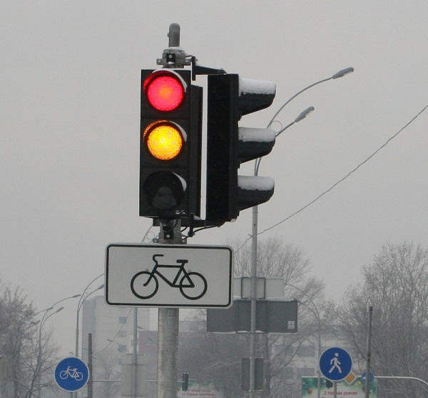

Цікаві факти про світлофори
Давайте дізнаємося цікаві факти про світлофори. У 1868 році в Англії був винайдений перший зразок. Створив його Дж. П. Найт.
Управління першого приладу було ручним, він мав 2 крила, перше з них мало на увазі сигнал «стоп», інше означало попередження, нагадуючи про необхідність
їхати з обережністю. Винахід був призначен для пересування людей через небезпечну дорогу, однак його сигнали спеціально призначалися для всіх транспортних
засобів.
Але також як і на сьогоднішній день, коли люди йдуть, машини обов’язково стоять. Приблизно через рік після встановлення нового світлофора, його прибрали через
поранення приладом керуючого їм полісмена.
Лестер Вайр створив перший в світі електричний світлофор в 1912 році. Пристрій складався з 2 електричних круглих ламп червоного кольору та зеленого. Винахід
Лестера Вайра, тим не менш, не запатентували.
Була сувора послідовність сигналів винаходу за кольорами — зверху червоний, потім жовтий, а зелений займає тільки нижню позицію. А знаєте, з якою метою така
послідовність задумана? Все для того, щоб люди, які страждають на дальтонізм, нездатні розрізняти певні відтінки виключно яскравих кольорів, змогли спокійно
переходити вулицю без будь-якого ризику для життя.
Але, так як подібні пацієнти і зелені, і червоні відтінки не розрізняють, нинішні «регулювальники руху» бірюзового, оранжевого відтінків.
Ще одним цікавим фактом про світлофори є наступне. У маленькому містечку, більшу частину якого складають ірландці, встановлений вельми оригінальний прилад, у
якого дозвільний сигнал для пішоходів розташовується зверху, червоний — знизу.
Дане пристосування встановили тут ще в 1925 році, проте раніше прилад піддавався частому нападу з боку дорослих і дітей. Вони щодня розбивали його, тому що
зелений, який символізував їх рідну Ірландію, був нижче червоного, а це колір британців.